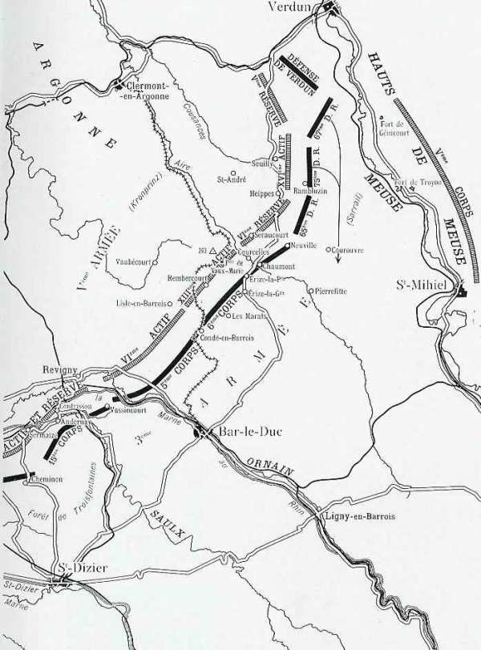
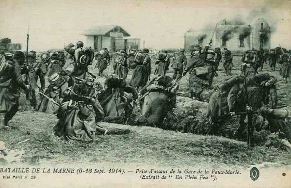
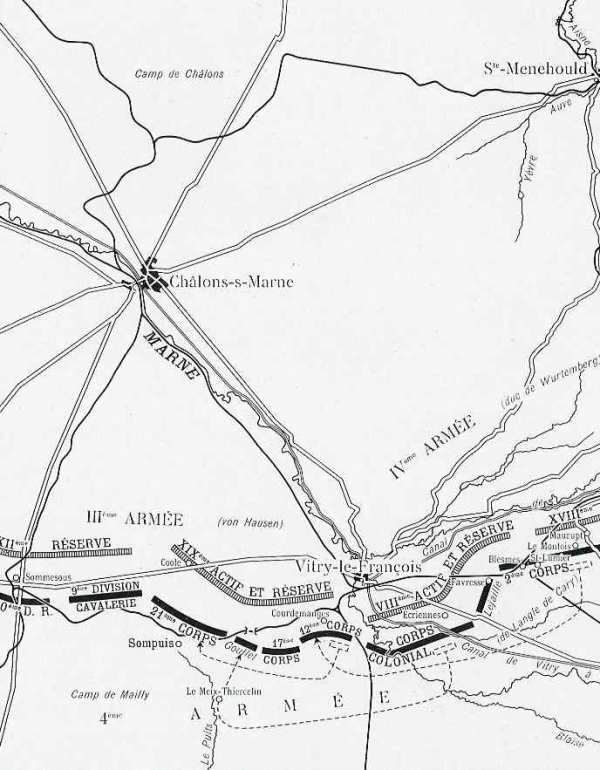
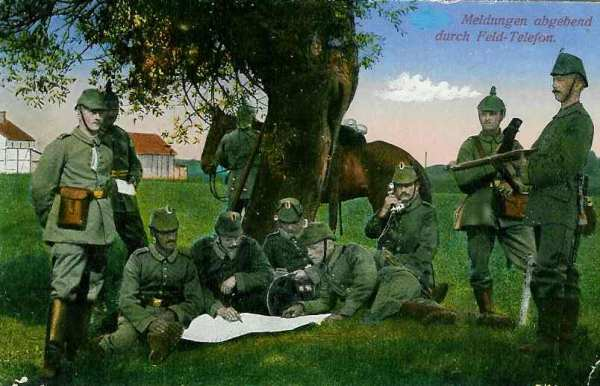

Le 10 septembre 1914
Joffre lance la première instruction en vue de la poursuite. L’armée de Sarrail subit encore de violents assauts au cours de la journée. A l’aile gauche, la Ve armée française traverse la Marne et la VIe armée voit les Allemands battre en retraite devant elle. La seconde sortie d’Anvers de l’armée belge vers les lignes de communications allemandes est en cours. Dans le camp allemand, comme von Kluck retraite vers Soissons, la brèche entre les Ie et IIe armées ne se comble pas.
G.Q.G. français
Vers 11h, Joffre apprend que les Allemands sont en pleine retraite devant l’armée de Maunoury et que les Anglais franchissent sans difficulté le Clignon. Il ordonne à Franchet d’Esperey de porter le 18e C.A. à hauteur de la droite anglaise.
A 18h, Joffre lance l’instruction particulière n° 21, la première directive d’exploitation de la poursuite.
 La VIe armée appuiera sa droite à l’Ourcq.
Les forces britanniques poursuivront leur action entre la 6e armée et Rocourt, Fère-en-Tardenois, Loupeigne, Bazoches.
La Ve armée contournera par l’ouest les massifs boisés au sud et au nord d’Epernay.
La IXe armée progressera à l’ouest de la route de Sommesous, Châlons.
La IVe armée refoulera l’adversaire sur la Marne en amont
de Châlons, vers Saint-Quentin, Dommartin-sur-Yèvre.
La VIe armée appuiera sa droite à l’Ourcq.
Les forces britanniques poursuivront leur action entre la 6e armée et Rocourt, Fère-en-Tardenois, Loupeigne, Bazoches.
La Ve armée contournera par l’ouest les massifs boisés au sud et au nord d’Epernay.
La IXe armée progressera à l’ouest de la route de Sommesous, Châlons.
La IVe armée refoulera l’adversaire sur la Marne en amont
de Châlons, vers Saint-Quentin, Dommartin-sur-Yèvre.
Comme les Allemands bombardent Nancy, Castelnau décide de répliquer.
L’attaque principale sera menée par le 2e G.D.R. et le 20e C.A. en direction de Champenoux pour le premier et Réméréville et Courbesseaux pour le second. La 16e C.A. agira vers Lunéville.  Devant l’armée de Sarrail, la lutte est plus violente que jamais. Troyon et Génicourt tiennent toujours mais des fractions allemandes commencent à franchir la Meuse à Croix-sur-Meuse. Pour éviter une catastrophe, Sarrail décide de replier sur Courouvre les 67e et 75e divisions de réserve. La fusillade prend une intensité formidable devant tout le 6e C.A. L’armée du kronprinz déclenche une violente attaque (13e et 16e C.A.). Les axes d’attaque passent sur la rive ouest de l’Aire à la ferme de Vaux-Marie et sur les hauteurs de Courcelles.  La gauche de la IVe armée, au contact avec la IIIe armée est vivement attaquée. Cheminon, point de liaison entre armées, doit être abandonné. D’autre part, le fort de Troyon semble être dans une situation désespérée. Des éléments allemands cherchent à passer la Meuse vers Lacroix où ils sont arrêtés par la D.C. d’Urbal.
Sarrail décide que, dès la prise du fort, il renoncera à garder le contact avec Verdun et repliera lentement sa droite au sud.
Vers 12h, le G.Q.G. annonce la retraite allemande devant la Ve armée et l’armée britannique. Il demande à la IIIe armée de résister sur place. Au 15e C.A., les troupes restent dans les bois de Laimont en présence des Allemands retranchés. Une série de combats se déroulent autour de Vassincourt. Les Allemands abandonnent cette localité après y avoir mis le feu. L’artillerie française les poursuit mais l’infanterie ne reçoit pas l’ordre de se porter en avant.  Sur le front de l’armée, la résistance allemande reste forte. Le duc de Wurtemberg défend ses positions avec la plus grande énergie.
de Langle pousse son aile gauche (21 et 17e C.A.) vers la Marne au sud de Châlons et reprend Vitry. Joffre télégraphie à la IVe armée que désormais la IXe armée serait en mesure de l’aider. Le C.C. Conneau pousse ses découvertes jusqu’à l’Ourcq, la 4e division à l’ouest de la route de Château-Thierry à Soissons, la 10e à l’est.
La 4e division dirige un escadron sur Neuilly-Saint-Front, avec mission de reconnaître les passages de l’Ourcq, puis elle marche vers le nord en se reliant à la cavalerie britannique. Le 18e C.A. est sensiblement en retard par rapport aux Anglais. La 38e division est en première ligne dans la région Etrépilly - Bézu-Saint-Germain ; la 36e est à l’ouest de Château-Thierry et la 35e au nord-est. Au 3e C.A., la cavalerie reconnaît dans la nuit du 9 au 10 la Marne à Mont-Saint-Père, Jauglonne, Passy, Dormans. Les cavaliers doivent passer sur le pont suspendu de Jauglonne en file indienne. La brigade occupe Jauglonne jusqu’à l’arrivée de l’infanterie, puis elle se porte sur Fismes. Dans la nuit du 9 au 10, le général Deligny prescrit au 1e C.A. de porter ses avant-gardes sur la rive nord du Surmelin. Les divisions bordent cette rivière vers 6h. Le 10e C.A. marche en direction du nord-est, par Fromentières, Champaubert, Lacaure, Montmort. La 51e division s’empare de Pierre-Morains mais l’artillerie de la 17e division (9e C.A.), tire sur le village, le croyant encore occupé par les Allemands. Ordre est donné à la Ve armée d’atteindre la Marne le jour même. Le 1e C.A. doit enlever les ponts de Dormans et de Verneuil, en poussant des avant-gardes au nord de la rivière, la 1e division vers Dormans, la 2e vers Verneuil. L’armée entame sa poursuite dès le matin. Dans l’après-midi, ses colonnes franchissent la Marne à Château-Thierry, à Dormans, à Verneuil, à Passy et aussi à Jauglonne malgré les tirs d’artillerie lourde à partir des hauteurs boisées de la rive nord. Les Français s’aperçoivent en matinée que les Allemands ont abandonné leurs positions et battent précipitamment en retraite vers le nord-est. En effet, ceux-ci risquaient d’être pris en tenaille entre la VIe armée et l’armée anglaise qui venait de franchir la Marne le 9.
La VIe armée n’a toutefois pas réussi à envelopper l’armée de von Kluck comme l’avaient envisagé Joffre et Galliéni, ce qui eût entraîné la déroute allemande, mais von Kluck a été contrait à la retraite, dont l’effet va se faire sentir par échelons sur le reste du front. Au 1e C.C., après l’épuisante incursion sur les arrières de l’armée von Kluck, la 5e division a passé les dernières heures de la nuit sur le plateau de Verrines (sud de Néry). Au petit jour, elle prend la direction de Nanteuil-le-Haudouin. La D.C. attaque un convoi en marche de Compiègne vers Crépy. La division traverse l’Oise sans encombre. L’artillerie de la 61e division (4e C.A.) s’établit entre Le Plessis-Belleville et Silly-le-Long. A ce moment, le commandement prévoit une offensive allemande venant du nord. Maunoury prescrit que l’armée se mette en marche pour porter le soir même les avant-gardes sur la ligne générale Vaux-Parfond - La Villeneuve - Thury - Cuvergnon - Bargny - Ormoy-Villers. En soirée, les avant-gardes du 4e C.A. atteignent la ligne Ormoy-Villers - Rozières.
Le groupe Lamaze cantonne à Betz et à Bargny, Antilly et Cuvergnon. Les avant-postes font face à la forêt de Villers-Cotterêts, se reliant au 7e C.A.
Les arrière-gardes allemandes sont signalées mais n’offrent pas de résistance. Les gros paraissent être au nord de la forêt de Villers-Cotterêts. Maunoury adresse un ordre du jour soulignant l’endurance de son armée. L’ordre au 11e C.A. prescrit la reprise de l’offensive sur le front Lenharrée - Sommesous dès 5h L’armée de Foch entame la poursuite sans éprouver de résistance. A Fère-Champenoise, les français capturent plusieurs officiers et soldats ivres morts. La 42e division, qui a pour objectif Normée - Lenharrée s’engage sur la croupe Connantre - Connantray. La marche est très lente. Vers 11 heures, l’artillerie allemande ouvre un violent tir de barrage sur Normée. Le 162e et 151e se déploient. L’attaque est enrayée jusqu’à 14h30. Dans le courant de l’après-midi, le 151e (42e division) passe la Somme, qui n’est pas gardée, et le régiment pousse à travers bois vers Villeveneux.
Eydoux donne un nouvel ordre pour la poursuite : le 9e C.A. marchera au nord de la route Fère-Champenoise - Châlons. Les têtes de divisions s’engagent toutefois contre de fortes arrière-gardes tenant Sommesous et les crêtes bordant la Somme au nord. Le soir, l’armée prend contact sur la ligne Morains - Normée - Lenharrée mais comme l’artillerie n’a pas pu suivre l’infanterie, Foch juge inutile de tenter une attaque. Les Anglais reprennent l’offensive vers la partie supérieure de l’Ourcq. Les 1e et 2e C.C., couverts à droite par la division de cavalerie (Allenby) et à gauche par les 3e et 5e brigades de cavalerie (Gough), poursuivent les Allemands vers le nord. Ils s’emparent de treize canons, 7 mitrailleuses et capturent 2.000 prisonniers.
La cavalerie engage de nombreux combats avec les arrière-gardes. Les avant-gardes atteignent en soirée la ligne La Ferté-Milon, Neuilly-Saint-Front, Rocourt. La journée est consacrée à la préparation del’offensive générale.
Les 1e et 5e divisions sont amenées à pied d’oeuvre.
Voici, par division les événements de la journée :
A 12h15, le commandant de la division décide de se porter à l’attaque de Leuven, mais le III/26 ne peut se maintenir à Wijgmaal et doit rétrograder vers Quellenberg, ce qui entraine le recul des autres unités.
Il faut renoncer à attaquer Leuven et la 2e division recule de plus de 10 km jusqu’au nord du Demer. Une reconnaissance d’officiers postée près de Bautersem a vu des trains bondés de troupes se dirigeant de Tienen vers Leuven. 10h50 : on signale des débarquements de troupes allemandes entre Roosbeek et Tienen. 13h40 : une colonne allemande atteint la route Leuven - Tienen ; elle est dispersée par le feu de l’artillerie à cheval belge. La commandant de la D.C. fait canonner la gare de Leuven mais le pont de la voie ferrée à l’ouest de Boutersem ne peut être détruit. 17h : ordre est donné de bivouaquer vers Pellenberg. En soirée : les cinq D.A. et la D.C., amenées face à leurs objectifs vont pouvoir commencer une attaque énergique. L’ordre de l’E.M. fixe leur déclenchement pour le 11 septembre à 6h, mais la retraite de la 2e division dérange les projets.
L’E.M. apprend que le 9e C.A.R. fait route vers la France. L’objectif est de l’obliger à rebrousser chemin. Voici les directives pour le 11 :
Toutefois, le commandant de la 2e division se déclare incapable de couvrir défensivement la gauche de l’armée en se portant au-delà du débouché du Demer. L’offensive doit donc être différée. En début d’après-midi, Hentsch arrive à l’O.H.L. Il expose la situation des différentes armées.
A 16h45, Moltke signe un radiogramme prescrivant le repli de l’ensemble des armées par pivotement autour de la Ve armée.
Les positions atteintes par les armées seront organisées et tenues.
Malheureusement pour Moltke, von Heeringen lui annonce qu’une sortie des Belges d’Anvers en direction de Leuven retardera l’arrivée du 15e C.A. à Saint-Quentin, car il a dû engager des éléments de ce C.A. à l’est de Leuven. Comme une brèche de 30 km subsiste entre les Ie et IIe armées, il faudra faire appel à des éléments extérieurs (VIIe armée) qui devra jeter ses forces vers Laon - Soissons, entre von Kluck et von Bülow. Von Kluck fait savoir à l’O.H.L. que les Anglais ont franchi la Marne dans le secteur La Ferté-sous-Jouarre - Château-Thierry et qu’il a l’intention de continuer à se replier pour passer au nord de l’Aisne.
A 19h, von Kluck annonce qu’il s’est replié au nord de la forêt de Villers-Cotterets. En fait, son armée marche vers Soissons en direction du nord et ne se rapproche pas de la IIe armée pour colmater la brèche ! Si la Ie armée n’a pas pris la direction de Fismes (nord-est) et que la IIe armée reste sur la Marne, la brèche ira même en s’élargissant. Von Bülow fait connaître à l’O.H.L. qu’il atteindra le front Dormans - Avize avec une forte arrière-garde au sud de la Marne. Il signale également que les têtes de colonnes d’infanterie alliée ont franchi la ligne générale Bézu (10 km au nord de Château-Thierry) - Jauglonne - Etoges. La masse de la Ve armée française cherche donc à déborder l’aile droite de von Bülow et pousse dans la brèche entre les Ie et IIe armées. La 23e division saxonne atteint dans la nuit la Marne en amont de Châlons.
Tandis que le succès se dessine nettement en faveur de la gauche et du centre des alliés, il est plus disputé à la droite. Elle a essuyé un échec dans son attaque sur Blesmes et a dû replier son aile gauche. Les C.A. opposés à l’armée de Sarrail sont les 6e, 16e, 13e C.A., renforcés par le 6e C.A.R. L’E.M. du kronprinz s’installe à Revigny.  Ce dernier réclame des renforts à l’O.H.L., car l’armée a dû lutter toute la journée pour conserver le peu de terrain conquis au cours de son attaque de nuit et cette lutte a entraîné de lourdes pertes. Sur la rive droite de la Meuse, le 5e C.A. a échoué dans son attaque du fort de Troyon. Comme les français ont contre-attaque violemment dans la région de Nancy, des mesures sont prises pour commencer le repli général de l’armée. Le lendemain, elle atteindra la Vezouse et la frontière le 12. Cinq mille allemands se trouvent devant Dendermonde. Le 24e de ligne et deux batteries reçoivent l’ordre de défendre l’EscautIIe armée française
IIIe armée française
15e C.A. : Le général Espinasse attaque à fond au nord-ouest, la 30e division à gauche, à cheval sur la Saulx, dans la direction de Contrisson, la 29e division, à droite, vers Vassincourt, mais les Allemands tiennent encore Vassincourt et la Saulx. 5e C.A. : Après un bombardement violent, les Allemands attaquent vers Lisle-en-Barrois, le C.A. doit reculer jusqu’à Condé. 6e C.A. : A minuit, les forces allemandes attaquent. Partout, la ligne française recule. La 17e brigade se retire vers Erize-la-Grande, une partie se rabat sur Condé ; la 12e division retraite, abandonnant Rembercourt et la ferme de Vaux-Marie.
La 40e division doit abandonner Courcelles mais arrête l’avance allemande devant Erize-la-Petite. Elle s’établit en fin de journée vers Chaumont et Neuville. Groupe des Divisions de réserve : La 65e division est rejetée de Seraucourt, du signal d’Heippes. Les Allemands, venant de Saint-André, attaquent en pleine nuit la 75e division. Heippes est perdu au point du jour et, l’après-midi, Souilly.IVe armée française
Le général Legrand, qui a pris l’offensive dès 6h du matin à la tête du 21e C.A., ne s’empare de Sompuis qu’aux prix de lourdes pertes. - 19.9 ko") Le 17e C.A. et le corps colonial sont en échec devant Courdemange et devant Ecrienne. Devant le front du 2e C.A. , les Allemands forcent les lignes françaises vers Sermaize, Maurupt-le-Montoy qui est pris et repris à plusieurs reprises. Le 12e C.A. reçoit du renfort au cours de la nuit. L’offensive se déclenche dès le matin. La gauche avance d’environt 3 km. La droite se heurte aux positions défensives de Courdemanges. Corps colonial : Une tentative sur Ecriennes échoue devant le feu des batteries allemandes.
Le 17e C.A. et le corps colonial sont en échec devant Courdemange et devant Ecrienne. Devant le front du 2e C.A. , les Allemands forcent les lignes françaises vers Sermaize, Maurupt-le-Montoy qui est pris et repris à plusieurs reprises. Le 12e C.A. reçoit du renfort au cours de la nuit. L’offensive se déclenche dès le matin. La gauche avance d’environt 3 km. La droite se heurte aux positions défensives de Courdemanges. Corps colonial : Une tentative sur Ecriennes échoue devant le feu des batteries allemandes.Ve armée française : traverse la Marne

VIe armée française
Le 4e C.A. se met immédiatement en marche, les 7e et 8e divisions en première ligne, la 61e suivant.
Le 7e C.A. entame son mouvement en deux colonnes, la 14e division à l’ouest de la 63e.
Au groupe Lamaze, la 56e division marche de la ligne Puisieux - Acy - Betz - Bargny vers celle de Trocy - Vincy - Rosoy - Thury.
La marche s’effectue sans incident.
La retraite allemande s’effectue en bon ordre mais ils doivent abandonner sur place leurs grands blessés.IXe armée française
 La 21e division vers Connantray
La 18e division par Gourgançon
La 22e division vers Haussimont - Sommesous.
La 21e division vers Connantray
La 18e division par Gourgançon
La 22e division vers Haussimont - Sommesous.

Armée anglaise

Armée belge
La 5e division se portera sur la rive est du canal de Willebroek pour occuper la ligne Leest - Thisselt.
La 1e division est transportée par chemin de fer dans la région de Waelhem, sauf un bataillon qui restera à Dendermonde.
Le gros de la 6e division est rassemblé vers Schriek - Putte.
La 2e division se portera en avant vers Wijgmaal et établira une tête de pont à Werchter. Le matériel sera réuni pour franchir le canal de Leuven à Mechelen, à Wijgmaal et à Tildonk. 3e division : elle doit pousser des reconnaissances vers Hofstade, Schiplaken et Kampenhout, mais dans le courant de l’après-midi, les Allemands attaquent en débouchant de Neerstraat et de Wespelaar, soutenus par une artillerie nombreuse et disposant sans cesse de troupes fraîches.
L’attaque est dirigée vers Haacht. Les 9e et 14e belges résistent à tous les assauts et infligent des pertes sévères aux marins qui doivent battre précipitamment en retraite. 2e division : vers 10h, après une vive lutte contre des postes de mitrailleuses installés aux abords de Wijgmaal, le III/26 traverse la Dyle et s’établit à la lisière ouest de la localité. D.C. : Le commandant de la D.C. lui assigne comme objectif le Galgenberg (4 km au sud des lisières sud de Leuven. La colonne suitl’itinéraire Dutzel - Gobbelsrode - Pellenberg.
9h30 : l’avant-garde arrive à De Plein et signale que les Allemands occupent les châteaux de Pellenberg et de Lovenjoel. Les 1e et 3e compagnies cyclistes sont accueillies par une fusillade nourrie. La D.C. ne peut briser la résistance des tirailleurs allemands solidement embusqués. 5e et 1e divisions : pousser vers le sud-est, la gauche contre la route de Mechelen - Leuven.
3e division : attaquer vers Over-de-Vaart.
6e division : attaquer vers Tildonk.
2e division : tenir défensivement à cheval sur la route Aarschot - Leuven.
D.C. couvrir la gauche du dispositif.O.H.L.
La Ie armée se replie vers Soissons.
La IIe se reporte au nord de la Marne, la droite à Dormans.
La IIIe est de part et d’autre de Châlons-sur-Marne.
Les IVe et Ve armées n’ont effectué aucun repli et peuvent rester sur leur position actuelle à condition que la IIIe armée laisse son C.A. de gauche, le 19e, au contact de la
IVe armée
Si la Ie armée se dirige vers Fismes, la brèche entre les Ie et IIe armées pourra être comblée. La Ie armée sera subordonnée au commandant de la IIe et tiendra la ligne Mourmelon-le-Petit - Francheville-au-Moivre. La IIe armée retraitera derrière la Vesle (aile gauche à Thuisy). La IIIe armée retraitera en liaison avec la IIe, sur la ligne de Mourmelon-le-Petit - Francheville. La IVe armée reculera en liaison avec la IIIe, au nord du canal de la Marne au Rhin, vers Revigny. La Ve armée restera sur ses positions, le 5e C.A. et la garnison de Metz attaquant les forts de Troyon, Paroches, Camp des Romains. Les premières fractions de la VIIe armée (15e C.A. et 7e C.A.R.) doivent atteindre le 12 septembre la région de Saint-Quentin - Sizy et se lier à la IIe armée..Ie armée allemande
IIe armée allemande
IIIe armée allemande
IVe armée allemande
Ve armée allemande
VIe armée allemande
Armée belge

{kind=link}